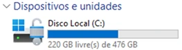

Já sentiu aquele frio na espinha quando o dispositivo travou e a primeira coisa que passou pela sua cabeça foi: "Minhas fotos da viagem! O meu TCC! Os documentos do imposto de renda!" ? Se você já viveu esse microinfarto digital, saiba que não está sozinho e que isso é muito mais comum do que parece.
Vivemos em uma época em que toda a nossa vida (nossas memórias, trabalhos, finanças e documentos) está armazenada em pequenos discos (hd mecânico) ou chips de memória (SSDs ou NVMEs) que podem falhar a qualquer momento. Mais do que falhas mecânicas, hoje enfrentamos ameaças silenciosas, como o temido ransomware (vírus que sequestra seus dados e cobra resgate).
Muitos acham que cibersegurança é assunto apenas para empresas ou hackers de filmes. A verdade é que a segurança da informação começa dentro de casa. A boa notícia? Proteger sua vida digital não precisa ser complicado, caro ou exigir conhecimentos de programação.
Neste artigo, vou apresentar práticas simples que eu mesmo utilizo no meu dia a dia para que você possa aplicar a sua realidade doméstica. Você vai aprender como aplicar o método de backup 3-2-1, descobrirá como automatizar tudo com ferramentas como o Cobian Reflector (gratuita) e o Norton 360 (licença que cabe no seu orçamento) e ainda entenderá por que criptografia de disco é o cadeado invisível que falta no seu dispositivo. Vamos transformar o seu dispositivo na fortaleza mais segura da sua casa!
O que é ransomware e por que você deve se importar?
Diagnóstico: Ransomware
O ransomware é um tipo de software malicioso (malware) que age como um sequestrador digital. Ele invade o seu dispositivo (muitas vezes através de um anexo de e-mail falso ou um link suspeito no WhatsApp) e embaralha (criptografa) todos os seus arquivos. De repente, suas fotos com a extensão ".png" viram arquivos irreconhecíveis. Ao tentar abri-los, surge uma tela exigindo o pagamento de um resgate (geralmente em criptomoedas, como Bitcoin) para que você receba a chave que destranca sua vida digital.
Agora, como proceder se algo assim acontecer com você? Bom, aqui vai a regra de ouro da Segurança da Informação: nunca se paga o resgate. Não há garantia de que os criminosos devolverão seus dados e pagar apenas incentiva essa indústria criminosa. Então, qual é a saída? Ter um plano B tão bom que o sequestro perca o sentido. É aí que entra o método 3-2-1.
O Método de Backup 3-2-1
Se você perguntar a qualquer profissional de Segurança da Informação ou DPO qual é a estratégia definitiva para não perder dados, a resposta lógica será: o método 3-2-1. Não importa se você é um usuário em casa ou uma multinacional; a lógica é a mesma e ela salva vidas (digitais).
A Estrutura do Método 3-2-1
- 3 Cópias dos seus dados: A primeira cópia é o arquivo original no seu dispositivo. As outras duas são cópias de segurança para contingência.
- 2 Mídias diferentes: Use suportes distintos (ex: HD interno do PC + HD Externo ou Pendrive) para evitar que uma falha física única destrua tudo.
- 1 Cópia fora de casa (Offsite/Nuvem): Essencial para proteger contra furtos, picos de luz ou acidentes domésticos.
Seguindo essa tríade, você neutraliza praticamente todos os cenários de desastre possíveis, desde o pet que derruba água no notebook até o cibercriminoso do outro lado do mundo.
Colocando a mão na massa localmente: Conheça o Cobian Reflector
Fazer backup arrastando pastas manualmente toda semana é chato, demorado e você vai acabar esquecendo. A tecnologia existe para trabalhar por nós e nesse ponto, o Cobian Reflector se destaca.
Vantagens do Cobian Reflector
Uma ferramenta robusta, leve e gratuita para Windows que permite criar tarefas automáticas.
- Automação total: Configura uma vez e ele trabalha sozinho (ex: toda sexta às 20h).
- Backups incrementais: Copia apenas o que foi modificado desde o último backup, economizando espaço.
- Invisível: Roda em segundo plano sem deixar o dispositivo lento.
Alerta de Segurança
Para blindar seu HD externo contra ransomware, conecte-o apenas quando o backup for rodar. Se o HD externo ficar conectado 100% do tempo, um vírus pode infectar a cópia de segurança também.
A Fortaleza na nuvem: Norton 360 versão Deluxe
Salvar arquivos na nuvem significa enviar uma cópia criptografada deles para servidores altamente seguros. Para o ambiente doméstico, o Norton 360 versão Deluxe oferece o que chamamos de segurança em camadas.
Benefícios Norton 360 versão Deluxe
- 50GB de backup automático em nuvem segura.
- Proteção antivírus avançada integrada.
- VPN integrada para navegação privada.
- Cobre até 5 dispositivos (PC, Mac, Celulares).
O que evitar
- Confiar apenas na nuvem sem antivírus ativo.
- Usar a mesma senha da nuvem em outros sites.
- Manter arquivos críticos apenas em um local.
Ao adquirir a licença do Norton 360 versão Deluxe, você ganha automaticamente 50GB de espaço seguro na nuvem da Norton. O próprio software da Norton gerencia esse backup para você de forma automática e integrada. Você não precisa lembrar de fazer upload de nada.
Um "combo" perfeito: Diferente de assinar um serviço só para nuvem e outro só para antivírus, o Norton unifica tudo. Seus 50GB servem perfeitamente para salvar aqueles documentos vitais, planilhas financeiras, projetos e as fotos mais importantes.
Além disso, uma licença da versão Deluxe garante proteção antivírus avançada para até 5 dispositivos, seja o notebook do(a) esposo(a), o celular do(a) filho(a) ou o MacBook da casa. Caso precise proteger ainda mais equipamentos, pode optar pela versão Advanced, que cobre até 10 dispositivos.
Tendo o Norton rodando silenciosamente, barrando ameaças ativamente e subindo seus arquivos críticos para a nuvem de 50GB, sua regra 3-2-1 está completa com louvor.
A criptografia de disco: O cadeado invisível
A criptografia de disco inteiro (Full Disk Encryption) protege seus dados se o hardware for roubado. No Windows, usamos o BitLocker; no Mac, o FileVault e no Linux, usamos ferramentas como o LUKS.
Como funciona o BitLocker
Ele embaralha completamente todos os dados do HD. Se o notebook for furtado no aeroporto, o ladrão não conseguirá ler suas fotos ou senhas mesmo que remova o HD e ligue em outro PC. O disco só "desembaralha" quando você fornece a senha, PIN ou biometria no ligar do aparelho.

O Mito: Criptografia vs Ransomware
Atenção: O BitLocker protege os dados com o dispositivo desligado (contra roubo físico). Quando você liga o PC e digita sua senha, o BitLocker "abre o cofre" para você trabalhar. Se você clicar em um link malicioso sem ter uma solução antivírus instalada ou ativa, o ransomware aproveitará o fato do equipamento estar desbloqueado para o uso e criptografará (sequestrará) os dados, dessa vez com a senha dos cibercriminosos. Por isso, a combinação de BitLocker + Antivírus (Norton) + Backup 3-2-1 é a única defesa completa.
Checklist de Segurança Doméstica
Siga este roteiro para elevar sua proteção ao nível corporativo:
- Ative a criptografia: Verifique o BitLocker no menu iniciar e salve a chave de recuperação.
- Separe um HD externo: Dedique uma unidade apenas para seus backups locais.
- Configure o Cobian Reflector: Agende backups incrementais automáticos.
- Nuvem + Antivírus: Instale o Norton 360 Deluxe e configure os 50GB de backup.
- Teste seu Backup: A cada dois meses, tente abrir um arquivo antigo do HD externo para validar a integridade.
Conclusão: A paz de espírito digital
A segurança da informação não é sobre ter medo da internet, mas sim sobre navegar com tranquilidade. Aplicar o método 3-2-1, aliar a força do Norton 360 Deluxe e trancar a porta física com o BitLocker elevará o nível da sua segurança doméstica ao patamar de grandes corporações.
O custo financeiro e de tempo para configurar essas ferramentas hoje é infinitamente menor do que o estresse e o dinheiro perdidos com fotos de infância desaparecidas ou documentos fiscais sequestrados. Trate sua vida digital com o cuidado que ela merece. Configure seu backup, ative sua criptografia e viva uma vida online muito mais segura e feliz.